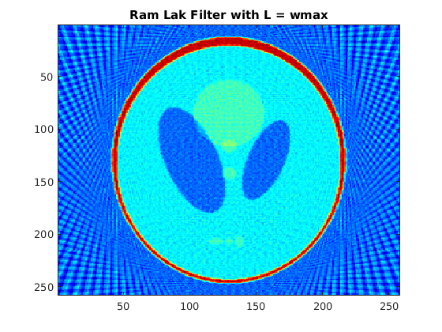
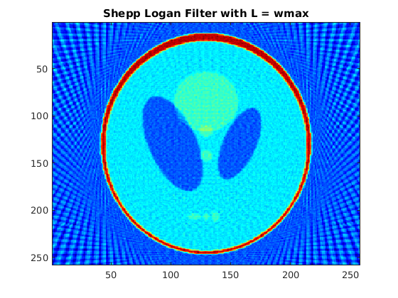
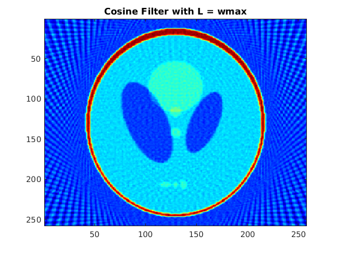
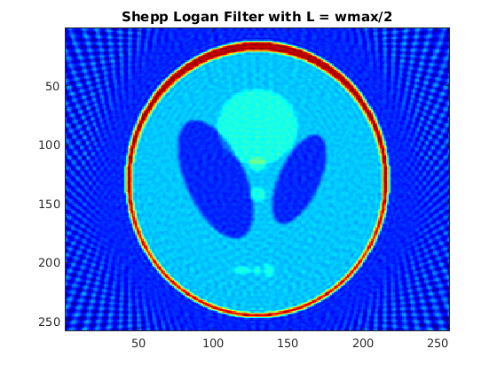
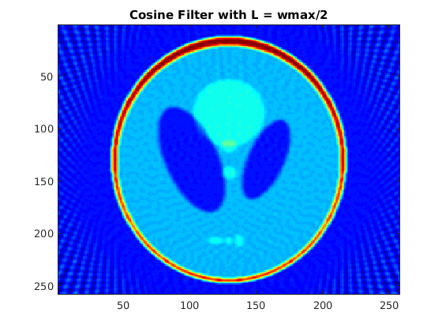
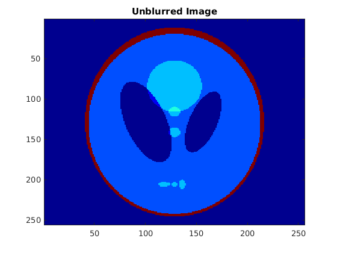
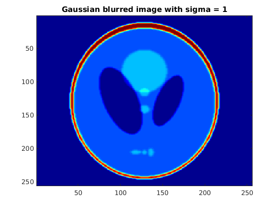
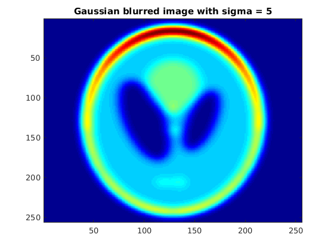
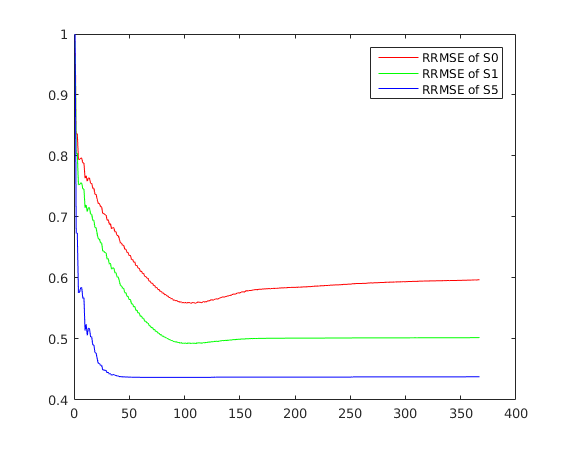

Contents
clear; clc;
2.(a) part
original_image = phantom(256); theta = 0:3:177; rad_image = radon(original_image,theta); back_projection = 0.5*iradon(rad_image,theta,'linear','none'); [ram_lak_1,shepp_logan_1,cosine_1] = myFilter(rad_image,1); [ram_lak_2,shepp_logan_2,cosine_2] = myFilter(rad_image,0.5); back_ram_lak_1 = 0.5*iradon(ram_lak_1,theta,'linear','none'); back_shepp_logan_1 = 0.5*iradon(shepp_logan_1,theta,'linear','none'); back_cosine_1 = 0.5*iradon(cosine_1,theta,'linear','none'); back_ram_lak_2 = 0.5*iradon(ram_lak_2,theta,'linear','none'); back_shepp_logan_2 = 0.5*iradon(shepp_logan_2,theta,'linear','none'); back_cosine_2 = 0.5*iradon(cosine_2,theta,'linear','none'); figure; imagesc(back_ram_lak_1);colormap(jet);title('Ram Lak Filter with L = wmax'); figure; imagesc(back_shepp_logan_1);colormap(jet);title('Shepp Logan Filter with L = wmax'); figure; imagesc(back_cosine_1);colormap(jet);title('Cosine Filter with L = wmax'); figure; imagesc(back_ram_lak_2);colormap(jet);title('Ram Lak Filter with L = wmax/2'); figure; imagesc(back_shepp_logan_2);colormap(jet);title('Shepp Logan Filter with L = wmax/2'); figure; imagesc(back_cosine_2);colormap(jet);title('Cosine Filter with L = wmax/2');    
Part A: Justification
Images which are generated with filters using cutoff frequency as wmax/2 are smoother because the higher frequency components correspond to noise in the image. Also Cosine filter gives smoother output as compared to the other two because the weight of higher frequencies in the cosine filter is less. Among Ram-Lak and Shepp-logan filter, the latter gives smoother image due to similar reason as above.
2.(b) part
mask = fspecial ('gaussian', 11, 1); s1 = conv2(original_image,mask,'same'); mask = fspecial ('gaussian', 51, 5); s5 = conv2(original_image,mask,'same'); figure; imagesc(original_image);colormap(jet);title('Unblurred Image'); figure; imagesc(s1);colormap(jet);title('Gaussian blurred image with sigma = 1'); figure; imagesc(s5);colormap(jet);title('Gaussian blurred image with sigma = 5'); rad_image_1 = radon(s1,theta); rad_image_5 = radon(s5,theta); [f0,~,~] = myFilter(rad_image,1); [f1,~,~] = myFilter(rad_image_1,1); [f5,~,~] = myFilter(rad_image_5,1); r0 = 0.5*iradon(f0,theta,'linear','none',1,256); r1 = 0.5*iradon(f1,theta,'linear','none',1,256); r5 = 0.5*iradon(f5,theta,'linear','none',1,256); rrmse_0 = RRMSE(original_image,r0); rrmse_1 = RRMSE(s1,r1); rrmse_5 = RRMSE(s5,r5); fprintf('rrmse_0 is %0.4f\n',rrmse_0); fprintf('rrmse_1 is %0.4f\n',rrmse_1); fprintf('rrmse_5 is %0.4f\n',rrmse_5);
rrmse_0 is 0.5972 rrmse_1 is 0.5022 rrmse_5 is 0.4382  
Part B: Justification
RRMSE is largest for unblurred image and smallest for image with greatest blurring. This is because blurring reduces the higher frequency components. So when we filter the fourier transform of image, less number of frequencies are removed which in turn leads to less error between the original image and reconstructed image.
2.(c) part
N = size(rad_image,1); rrmse0_values = zeros(N,1); rrmse1_values = zeros(N,1); rrmse5_values = zeros(N,1); for i = 1:N [radon_filtered_0,~,~] = myFilter(rad_image, i/N); back_proj_0 = 0.5*iradon(radon_filtered_0,theta,'linear','none',1,256); [radon_filtered_1,~,~] = myFilter(rad_image_1, i/N); back_proj_1 = 0.5*iradon(radon_filtered_1,theta,'linear','none',1,256); [radon_filtered_5,~,~] = myFilter(rad_image_5, i/N); back_proj_5 = 0.5*iradon(radon_filtered_5,theta,'linear','none',1,256); rrmse0_values(i) = RRMSE(original_image, back_proj_0 ); rrmse1_values(i) = RRMSE(s1, back_proj_1 ); rrmse5_values(i) = RRMSE(s5, back_proj_5 ); end figure; plot(rrmse0_values,'r') hold on; plot(rrmse1_values,'g') hold on; plot(rrmse5_values,'b') legend('RRMSE of S0','RRMSE of S1','RRMSE of S5')
Part C: Justification
RRMSE is very large for L=1, this is because most of the frequency components are removed and the resulting image is almost uniform. Then it drops to a minima and after that starts rising again as we allow higher frequencies. This is because noise is amplified if we don't remove the higher frequency components.